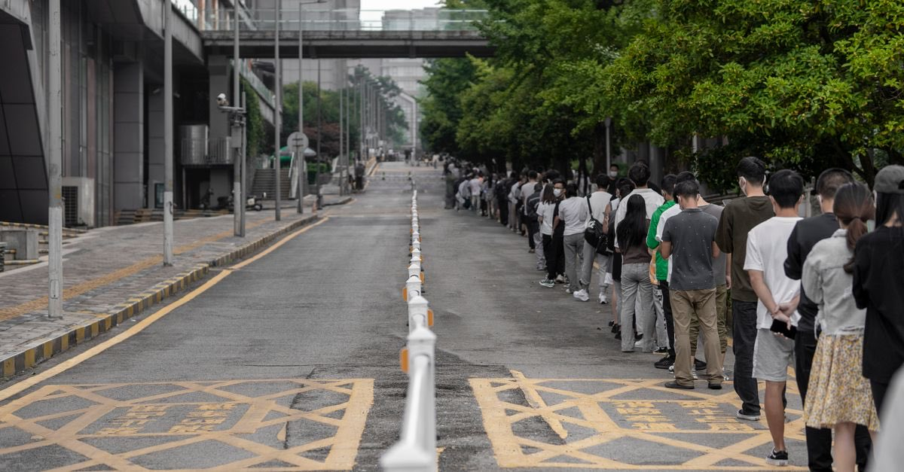

Genel akışın dışında kalanlar: öğrenci, asker, memur ve yabancı uyruklular
Afet sistemi malik-kiracı ekseni üzerine kuruludur. Öğrenciler, askerlik yükümlüleri, kamu personeli ve geçici koruma altındakiler bu eksenin dışında kalır; hakları çoğunlukla emsal uygulamalardan okunur.

Afet sonrası toparlanma sistemi tek bir eksende kuruludur: kim malik, kim kiracı. Bu eksenin dışında kalan gruplar — üniversite öğrencisi, askerlik yükümlüsü, kamu personeli, geçici koruma altındaki kişiler — kendilerine ne olacağını çoğu zaman hiçbir yerde yazılı bulamaz.
Bu sayfa, o boşluğu dürüstçe anlatır. Buradaki başlıkların çoğu kalıcı mevzuattan değil, geçmiş afette uygulanmış idari kararlardan okunur. Aradaki fark, hakkınız olan ile umut ettiğiniz şey arasındaki farktır.
Bu sayfadaki bilgilerin niteliği. Aşağıdaki başlıkların büyük kısmı 2023 depremlerine özgü uygulamalardır. Yeni bir afette aynı kararların aynı kapsamda tekrarlanacağının garantisi yoktur. Bu yüzden hiçbirini "hakkınız" diye sunmuyoruz; "böyle uygulanmıştı, bugün için kurumun güncel duyurusunu doğrulayın" diyoruz.
Öğrenciler
2023 uygulamasında öne çıkan üç başlık şuydu:
- KYK kredisinin bursa dönüştürülmesi — depremde yakınını kaybeden ya da konutu veya iş yeri hasar gören öğrenciler için uygulanmıştır.
- Yurtlarda öncelik — ek şart aranmaksızın yerleştirme yapılmıştır.
- Psikososyal destek programları — üniversiteler ve kurumlar eliyle yürütülmüştür.
Bugün için yapılması gereken, üniversitenizin ve KYK'nın o afete ilişkin duyurusunu yazılı olarak teyit etmek ve başvuruyu süresi içinde yapmaktır. Hasar tespit belgesi, öğrencinin kendisine değil konutun malikine verildiği için, ailenizden belge örneği istemeniz gerekebilir.
Askerlik yükümlüleri
Sevk tehiri, kanunla kendiliğinden doğan bir hak değil, mazerete bağlı idari bir işlemdir; genel çerçevesi Sevk Tehiri İşlemleri Yönetmeliğidir. 2023'te olağanüstü hâl ilan edilen illerde kayıtlı yükümlülerin belirli celp dönemleri ertelenmiştir.
Yazılı başvuru ve kayıt
Sevk tehiri talebinizi askerlik şubesine yazılı verin ve evrak kaydını alın. "Zaten erteleniyor" bilgisiyle yetinmek, sevk tarihinde bulunamama sonucunu doğurabilir.
Kamu personeli
Afet bölgesindeki memurlar için idari izin, geçici görevlendirme ve naklen atama kolaylıkları gündeme gelir; 2023'te kurumlar bu yönde çalışma yürütmüş, idari izin konusunda merkezî düzenleme yapılmıştır. Bunların hiçbiri sürekli bir hak değildir; kurum kararına bağlıdır.
Pratik kural aynıdır: talebi yazılı verin, kaydını saklayın. Reddedilen bir talebe karşı idari başvuru ve dava yolları açıktır; süreler için idari süreçler ve dava yolları sayfasına bakın.
Yabancı uyruklular ve geçici koruma altındakiler
Deprem bölgesinin gerçek nüfus profili düşünüldüğünde bu başlık kapsam dışı bırakılamaz. Uluslararası koruma başvuru sahipleri, statü sahipleri ve geçici koruma kapsamındaki kişiler de depremden doğan zararlar bakımından başvuru yollarına sahiptir.
Buna karşılık pratikte üç yapısal engel vardır:
| Engel | Neden doğuyor | Sonucu |
|---|---|---|
| Mülkiyet şartı | Hak sahipliği ve afet konutu tapu ilişkisine bağlı yürür | Kayıt dışı kirada oturan kişi kuyruğun dışında kalır |
| Poliçenin malik adına olması | DASK bina ve malik üzerinedir | Kiracı tazminatın tarafı değildir |
| Kayıt ve il dışına çıkış kuralları | Statü, kayıtlı olunan ile bağlıdır | Yardıma erişim ve barınma tercihleri kısıtlanabilir |
Buna karşılık kaybedilmeyen bir hak vardır ve en az bilinenidir: tazminat davası açmak için tapu sahibi olmak gerekmez. Müteahhide, yapı denetim kuruluşuna ve idareye karşı kendi zararınız için dava açabilirsiniz — vatandaşlık ya da mülkiyet şartı aranmaz.
Ayrıntı: kiracının deprem hakları ve müteahhidin sorumluluğu.
Dil engeli ve destek noktaları
Başvuruların çoğu Türkçe evrak üzerinden yürür. Tercüman desteği için barolar, belediyelerin göç birimleri ve UNHCR'ın deprem sayfası başlangıç noktasıdır. Bu platformun çok dilli hâle getirilmesi de aynı nedene dayanır.
Ortak kural: ispat edilebilir bir dosya kurun
Bu sayfadaki dört grubun ortak sorunu, sistemin onları öngörmemiş olmasıdır. Bunun tek pratik karşılığı vardır: her başvuruyu yazılı yapmak, her evrağın kaydını almak ve reddedilen talepler için gerekçeli yazılı cevap istemek.
Ücretini karşılayamıyorsanız bulunduğunuz ilin barosunun adli yardım birimine başvurun; baro ücretsiz avukat görevlendirir.
Kanuni dayanak
| Mevzuat | Ne diyor |
|---|---|
| 7269 sayılı Umumi Hayata Müessir Afetler Kanunu | Hak sahipliğinin çerçevesini çizer; başvurunun mülkiyet ilişkisine bağlı yürüdüğü ana metindir. |
| Sevk Tehiri İşlemleri Yönetmeliği | Askerlik yükümlülüğünde sevkin ertelenmesine ilişkin genel çerçeveyi belirler. |
| 657 sayılı Devlet Memurları Kanunu | Kamu personelinin mazeret izni, geçici görevlendirme ve naklen atama işlemlerinin dayanağıdır. |
| 6458 sayılı Yabancılar ve Uluslararası Koruma Kanunu | Geçici koruma ve uluslararası koruma statülerinin hukuki çerçevesini kurar. |
Sık sorulanlar
Öğrenciyim, KYK borcum siliniyor mu?
Kalıcı bir kural değildir. 2023'te depremde yakınını kaybeden veya konutu ya da iş yeri hasar gören öğrenciler için KYK kredisinin bursa dönüştürülmesi uygulanmıştır. Yeni bir afette aynı kararın çıkacağının garantisi yoktur; kurumun o afete özgü duyurusunu takip etmek gerekir.
Askerlik sevkim ertelenebilir mi?
Sevk tehiri, mazeret hâllerine bağlı bir idari işlemdir ve Sevk Tehiri İşlemleri Yönetmeliği çerçevesinde yürür. 2023'te OHAL ilan edilen illerde kayıtlı yükümlülerin belirli celpleri ertelenmiştir. Kendi durumunuz için askerlik şubesine yazılı başvurup kayıt almanız gerekir.
Kamu personeliyim; iznim veya tayinim nasıl olur?
Afet sonrasında kurumlar idari izin, geçici görevlendirme ve naklen atama kolaylıkları uygulayabilir. Bunlar kalıcı bir hak değil, kurum kararlarıdır. Talebinizi yazılı verin ve evrak kaydını saklayın; sözlü başvurunun ispatı yoktur.
Yabancı uyrukluyum veya geçici koruma altındayım; başvuru yapabilir miyim?
Depremden doğan zararlar bakımından başvuru yollarına erişim vardır; ancak hak sahipliği ve kira yardımı gibi başlıklar mülkiyet ve kayıt ilişkisine bağlı yürüdüğü için pratikte engellerle karşılaşılır. Kendi durumunuz için UNHCR Türkiye'nin deprem sayfasına ve baronun adli yardım birimine başvurun.
Kira sözleşmem yazılı değil; hiçbir hakkım yok mu?
Yazılı sözleşme bulunmaması kira ilişkisinin yokluğu anlamına gelmez; ödeme dekontu, tanık ve yazışmalar ispat aracı olabilir. Ancak yardımlara erişimde kayıt istenebildiği için, ispat araçlarınızı bir arada toplamanız kritik önemdedir.
Bu konuyla ilgili araç
Hak taramaÜç soruyla profilinize uyan hakları listeleyin.İlgili rehberler
 Kira ve mülkiyet
Kiracının deprem hakları: tazminat davası için tapu sahibi olmanız gerekmez
DASK malike öder, hak sahipliği tapu arar, afet konutu malike verilir. Ama tazminat davasında mülkiyet şartı yoktur — kiracının en güçlü hakkı budur.
Kira ve mülkiyet
Kiracının deprem hakları: tazminat davası için tapu sahibi olmanız gerekmez
DASK malike öder, hak sahipliği tapu arar, afet konutu malike verilir. Ama tazminat davasında mülkiyet şartı yoktur — kiracının en güçlü hakkı budur.
 Devlet destekleri
Hak sahipliği başvurusu: iki aylık süre, taahhütname ve faizsiz borçlandırma
Binası yıkılan veya ağır hasarlı malikler devletten konut ya da faizsiz kredi isteyebilir. Başvuru süresi ilan tarihinden itibaren iki aydır.
Devlet destekleri
Hak sahipliği başvurusu: iki aylık süre, taahhütname ve faizsiz borçlandırma
Binası yıkılan veya ağır hasarlı malikler devletten konut ya da faizsiz kredi isteyebilir. Başvuru süresi ilan tarihinden itibaren iki aydır.
 Çalışma hayatı ve iş yeri
Deprem işi durdurunca: yarım ücret, haklı fesih ve kısa çalışma
Deprem zorlayıcı sebeptir. İş bir haftadan fazla durursa hem işçinin hem işverenin derhal fesih hakkı doğar; duran bir haftaya kadarki süre için işveren yarım ücret öder.
Çalışma hayatı ve iş yeri
Deprem işi durdurunca: yarım ücret, haklı fesih ve kısa çalışma
Deprem zorlayıcı sebeptir. İş bir haftadan fazla durursa hem işçinin hem işverenin derhal fesih hakkı doğar; duran bir haftaya kadarki süre için işveren yarım ücret öder.